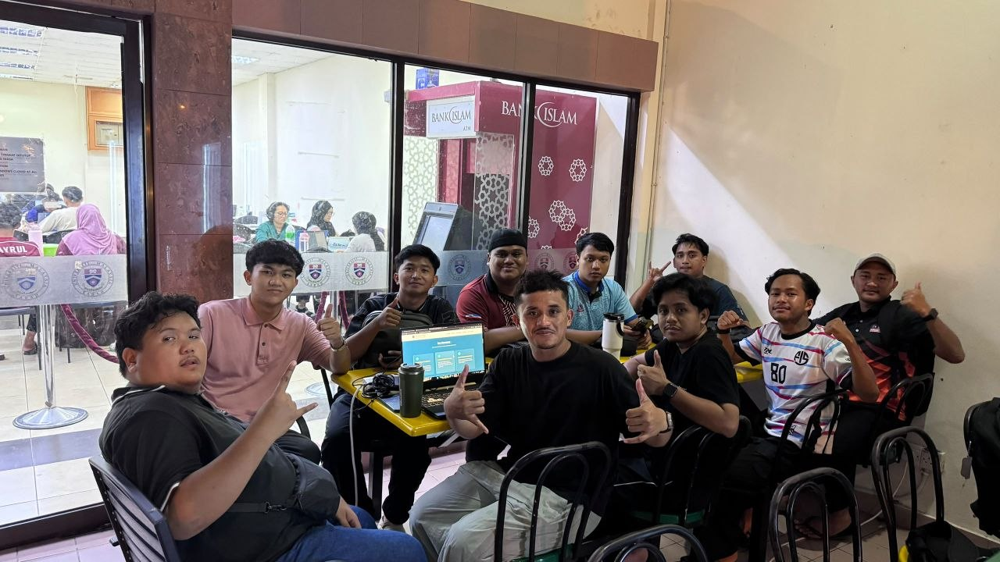

FIQH ZAKAT
وَأَقِيمُوا الصَّلَاةَ وَآتُوا الزَّكَاةَ وَارْكَعُوا مَعَ الرَّاكِعِينَ
"Dan dirikanlah kamu akan sembahyang dan keluarkanlah zakat, dan rukuklah kamu bersama-sama orang-orang yang rukuk."
(Surah Al-Baqarah: 43)
Misi Kami: Asas Fiqh Islam
KONSEP ASAS, RUKUN, DAN SYARAT WAJIB ZAKAT

DEFINISI ZAKAT
Bahasa: Berasal daripada perkataan Zaka yang bermaksud suci, tumbuh, berkat, dan terpuji.
Istilah: Mengeluarkan sebahagian harta tertentu untuk diberikan kepada golongan tertentu (Asnaf) dengan syarat-syarat yang telah ditetapkan oleh syarak.

RUKUN ZAKAT
- Pemberi Zakat: Individu yang memenuhi kriteria.
- Harta Zakat: Harta yang wajib dizakatkan.
- Penerima: 8 golongan asnaf (At-Taubah: 60).
- Niat: Membezakan ibadah dengan pemberian biasa.

SYARAT WAJIB ZAKAT
- Islam: Diwajibkan ke atas Muslim.
- Merdeka: Bukan hamba sahaya.
- Milik Sempurna: Harta di bawah kawalan penuh.
- Cukup Nisab: Nilai minimum (85g emas).
- Cukup Haul: Pemilikan genap setahun Hijriah.
Isu-Isu Moden
5 ISU SEMASA ZAKAT DI SABAH YANG ANDA PERLU TAHU
ZAKAT PENDAPATAN (Mal al-Mustafad)
Kewajipan zakat ke atas gaji, bonus, dan elaun yang menjadi perdebatan hangat, terutama bagi mereka yang menerima pendapatan yang besar dan berterusan.
E-COMMERCE & ASET DIGITAL
Status zakat bagi keuntungan daripada perniagaan TikTok Shop, Shopee, kriptowang, dan token digital.
ZAKAT WANG SIMPANAN KWSP
Polemik pengeluaran khas KWSP dan bila masanya ia wajib dizakatkan.
AGIHAN ZAKAT SECARA LANGSUNG
Isu masyarakat yang memilih untuk memberi zakat terus kepada asnaf tanpa melalui amil bertauliah.
PENYUCIAN HARTA (Harta Syubhah)
Bagaimana menguruskan harta daripada sumber yang meragukan, riba, atau pelaburan yang tidak patuh syariah.
Analisis & Keputusan: Zakat Pendapatan
ANALISIS FIQH PERBANDINGAN PENDAPATAN PROFESIONAL
| Mazhab | Pandangan | Dalil / Hujah |
|---|---|---|
| Mazhab Syafi'i (Klasik) | Tidak wajib zakat secara langsung pada gaji kecuali jika disimpan sehingga cukup haul dan nisab. | Mengambil hukum asal zakat simpanan yang memerlukan tempoh setahun (Haul). |
| Mazhab Maliki, Hanbali, Hanafi (Sebahagian) | Zakat boleh dikenakan sebaik sahaja harta diterima tanpa menunggu haul. | يَا أَيُّهَا الَّذِينَ آمَنُوا أَنفِقُوا مِن طَيِّبَاتِ مَا كَسَبْتُمْ Terjemahan: "Wahai orang-orang yang beriman, infakkanlah sebahagian hasil usahamu..." (Al-Baqarah: 267) |
| Fatwa Kontemporari | Wajib dizakatkan berdasarkan konsep Mal al-Mustafad demi keadilan sosial. | Menqiyaskan pendapatan profesional dengan zakat pertanian (bayar bila tuai). |
Penilaian Kritikal & Tarjih
Kekuatan Pandangan
Mewajibkan zakat pendapatan memastikan golongan profesional (T20/M40) turut menyumbang kepada kelestarian ekonomi asnaf secara berterusan.
Kelemahan Pandangan
Terdapat risiko bebanan jika kaedah tolakan (had kifayah) tidak dikemas kini mengikut kos sara hidup semasa di Sabah, terutama bagi M40.
Tarjih & Kaitan Masa Kini
Di Sabah, pandangan yang mewajibkan zakat pendapatan adalah lebih Rajih (kuat) dan diamalkan, didorong oleh keperluan asnaf dan keadilan sosial.
Elemen Inovasi: Kalkulator Zakat
FORMULA MODERN & HAD KIFAYAH SABAH
Formula Asas
Mengenai Kami & Rujukan
KUMPULAN S.O.H DAN SUMBER MAKLUMAT KAMI
Pasukan Kami: S.O.H
Inovasi platform web ini dibangunkan dengan teliti bagi memenuhi spesifikasi tugasan kursus AI40503 Fiqh Perbandingan di Universiti Malaysia Sabah.
Lihat Portfolio Projek Kami 🚀
Rujukan
- Majlis Ugama Islam Sabah (MUIS) - Garis Panduan Zakat Pendapatan & Had Kifayah.
- Al-Quran Al-Karim - Surah Al-Baqarah: 267.
- Kitab Fiqh Manhaji Mazhab Syafie - Perbahasan Haul dan Nisab.
- Fatwa Kontemporari Zakat - Hukum harta syubhah dan aset digital/kripto (Muzakarah MKI).